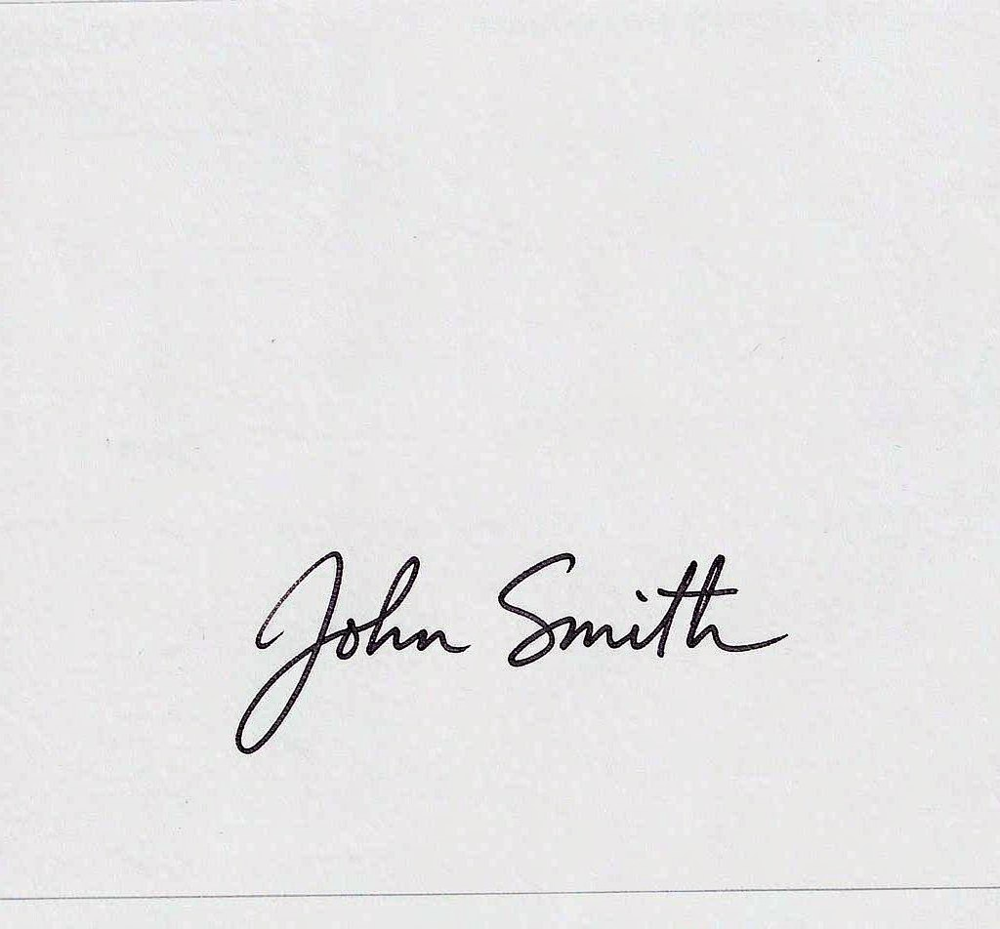
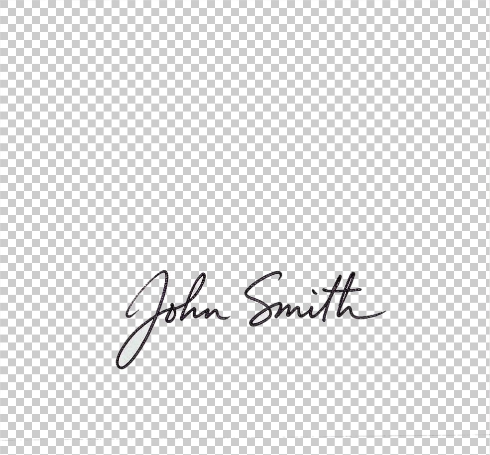
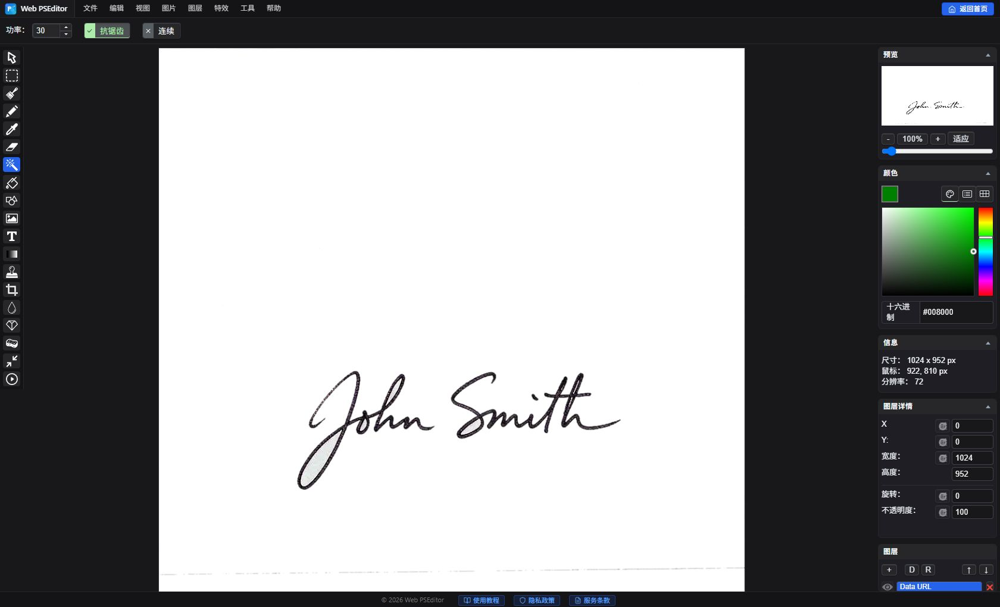

手写电子签名背景透明化提取
纸上的签名，本质上是「一张照片的照片」：白纸其实不是白的，某个角有镜头阴影，室内灯还给它加了一层黄。直接贴到合同上，一眼就是一块灰底加一道字。修它是四步，顺序决定成败——每一步都在让下一步更省事。


四步走完，一张干净的透明签名
把照片拖进编辑器，用裁剪工具裁到只剩签名，四周留 10 到 20 像素就够。裁紧不只是好看：后面魔术橡皮擦要清的纸面更少，原图边缘那些不均匀的光也一并扔掉了。
点 【特效】→【常见滤镜】→【灰度】，百分比拉到 100。黄调、蓝调一次清掉，剩下的只是纸不够白——这比修偏色容易得多。如果墨水是蓝色的、想留一点冷调，就用 80 而不是 100，笔画会略带青，纸面照样褪色。
打开 【图片】→【颜色校正】。先提亮度让纸接近纯白，再加对比让笔画变深、纸面压平。做的时候盯着笔画的收尾——那是墨最薄的地方，对比一过就先断。
三个 红 / 绿 / 蓝 通道在这里是精准工具。灰度之后纸面还是偏暖，就把红降几个点，笔画的黑度不受影响。【图片】→【自动调整颜色】 是快速替代方案，但它的白点是固定的，淡签名很容易被它冲掉，接受之前放到 200% 看一眼。
选魔术橡皮擦，功率设 20 到 40，点一块干净的纸面。容差内的像素全变透明，棋盘格透出来就是成功。剩下的角落、有阴影的边，一处一处补点，直到只剩笔画。
然后 【文件】→【导出】，选 PNG。（顺便记住：【文件】→【另存为】存的是工程文件，不是图片。）JPG 没有透明通道，导出会把背景填回白色，前面全白做。

擦除还是混合：两条路的区别
| 做法 | 适合 | 它实际做了什么 |
|---|---|---|
| 魔术橡皮擦 + PNG | 要复用到 Word、PDF、电子签平台 | 真的删掉纸的像素，写入透明通道，文件到哪都能用 |
| 正片叠底 | 只在这个编辑器里往文档上叠签名 | 白色被下层的颜色乘掉，看起来像透明，但一个像素都没删，文件本身不透明 |
| 橡皮擦（手动） | 横线纸、有阴影的纸，颜色匹配失灵时 | 小笔刷在 200% 下沿笔画把纸刷成透明 |
这个区别只有把文件拿出去用的时候才会显形。用正片叠底叠出来的签名，导出 JPG 放在那份文档上看着完美，换到任何别的背景就是一个白方块。签名要复用，就必须擦掉再导 PNG。
笔画干净与否，一半在拍摄
大多数糟糕的提取，问题出在按快门那一刻。斜着拍会让笔画粗细不均——离镜头近的一端更粗；单侧打光会在纸上留下一道渐变，没有任何一个容差值能同时吃掉亮部和暗部。平光、正对着拍，后面整个流程就只剩两下点击。
另一个问题是加工过度。每提一次对比，纸和墨的差距就拉开一点，过了某个点，细的起笔会断成一串点。如果签名需要看起来像墨水而不是矢量图，那么在纸变白的那一刻就停手，接受一点浅灰底——魔术橡皮擦能清掉浅灰，但接不回断掉的笔画。
- 斜着拍照——笔画粗细不均，加上一道颜色匹配吃不掉的打光渐变。
- 灰纸上的功率给太低——留下半透明的纸影。提到 30 到 40 再点一次。
- 对比推过头——细的收笔断成点。先 200% 看一眼再擦。
- 导出成 JPG——透明被丢弃。永远 PNG。
- 找「调整」或「色阶」菜单——这里没有。灰度在【特效】→【常见滤镜】下，亮度、对比和三个通道在【图片】→【颜色校正】里。
横线纸、带章、蓝色墨水怎么办
三种常见变体，处理方式略有不同：
- 横线纸——灰度之后线条和墨一样是深色，魔术橡皮擦分不开。直接用橡皮擦小笔刷沿笔画刷纸，或者先用矩形选择把签名所在的横条裁出来，避开大部分线。
- 带公章的签名——章是红色的，灰度会把它变成灰块。如果只要签名，在灰度之前先用 【图片】→【颜色校正】 把红通道压下去，或者接受章一起保留；要单独取签名，就等灰度后用橡皮擦手工清。
- 蓝色墨水——灰度百分比用 80 而不是 100，笔画会留一点冷调，看起来更像签字笔而不是打印体。真要保留蓝色，就跳过灰度，直接在颜色校正里把纸提白。
还有一个尺寸上的实用建议：导出的 PNG 按你预期最大的用途做，别做小了再放大。透明 PNG 缩小很干净，放大超过 150% 边缘就开始软。留着分层工程，需要另一个尺寸时重新导出，而不是把已导出的文件拉大。
常见问题 FAQ
为什么提取出的签名周围有灰色光晕？
那是墨水边缘的抗锯齿像素——一半纸一半墨——它们落在容差之外，被橡皮擦漏下了。把功率降到 10 到 12 直接点光晕，或者用小笔刷橡皮擦清。靠调高功率去除光晕会一起吃掉笔画，所以低功率二次点击才是对的做法。
手机照片带阴影，还能提取吗？
能。先用亮度把阴影提成接近纯白，再用魔术橡皮擦点；阴影特别重的地方，改用橡皮擦小笔刷沿笔画把纸刷掉，比跟容差较劲更快。拍的时候尽量平光正拍，这类补救能少一半。
透明签名怎么插进 Word 或 PDF？
导出 PNG 后在 Word 或 PDF 编辑器里【插入】→【图片】。因为背景是真的透明，签名会干净地浮在文字行和签名栏上方，不会带出一个白框。
相关教程推荐
提取一个签名，放到深色背景上查光晕，再贴到一份 PDF 里看效果。